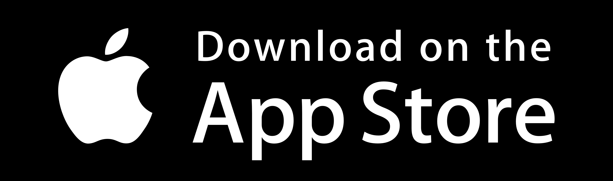

PassSafe
A safekeeping for all your passwords.
PassSafe is a personal project I worked on in September 2022, which was when I first started learning Android app development. In this digital era where there are vulnurabilities in almost anything online, it is crucial that one creates different secure passwords for the different platforms that they might be using. However, this leads to a key problem - remembering them. I asked some people about this and many seemed to possess this issue as well. Moreover, many password vaults out there are sometimes too much of a hassle to set up or contain too many features which may be difficult to implement and understand. Hence, I decided to create my own simple, yet secure password vault that anyone can comprehend and use safely.
PassSafe is a simple, free and easy to use password manager that securely stores your passwords offline with fast and efficient retrieval.
Features
1. Works offline2. No advertisements
3. Changes theme depending on your device (dark/light)
4. No data collected
5. Built-in hashing system
6. Simple interface and easy to use
7. Actively maintained app
8. Uses secure 256-bit AES encryption to store password locally
9. Bug reports will be worked upon with high priority
Downloads:
For screenshots and more information, visit my App Developer Github (W-Appz) here.